Prerequisite – Number System and base conversions
Gray Code system is a binary number system in which every successful pair of numbers differs in only one bit. It is used in applications in which the normal sequence of binary numbers generated by the hardware may produce an error or ambiguity during the transition from one number to the next.
For example, the states of a system may change from 3(011) to 4(100) as- 011 — 001 — 101 — 100. Therefore there is a high chance of a wrong state being read while the system changes from the initial state to the final state.
This could have serious consequences for the machine using the information. The Gray code eliminates this problem since only one bit changes its value during any transition between two numbers.
Converting Binary to Gray Code –
Let  be the bits representing the binary numbers, where
be the bits representing the binary numbers, where  is the LSB and 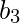 is the MSB, and
is the LSB and 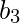 is the MSB, and
Let  be the bits representing the gray code of the binary numbers, where 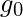 is the LSB and 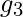 is the MSB.
be the bits representing the gray code of the binary numbers, where 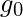 is the LSB and 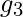 is the MSB.
The truth table for the conversion is-
![\begin{tabular}{||c|c|c|c||c|c|c|c||} \hline \multicolumn{4}{||c||}{Binary} & \multicolumn{4}{|c||}{Gray Code}\\ \hline b_3 & b_2 & b_1 & b_0 & g_3 & g_2 & g_1 & g_0 \\ \hline \hline 0 & 0 & 0 & 0 & 0 & 0 & 0 & 0 \\ \hline 0 & 0 & 0 & 1 & 0 & 0 & 0 & 1 \\ \hline 0 & 0 & 1 & 0 & 0 & 0 & 1 & 1 \\ \hline 0 & 0 & 1 & 1 & 0 & 0 & 1 & 0 \\ \hline \hline 0 & 1 & 0 & 0 & 0 & 1 & 1 & 0 \\ \hline 0 & 1 & 0 & 1 & 0 & 1 & 1 & 1 \\ \hline 0 & 1 & 1 & 0 & 0 & 1 & 0 & 1 \\ \hline 0 & 1 & 1 & 1 & 0 & 1 & 0 & 0 \\ \hline \hline 1 & 0 & 0 & 0 & 1 & 1 & 0 & 0 \\ \hline 1 & 0 & 0 & 1 & 1 & 1 & 0 & 1 \\ \hline 1 & 0 & 1 & 0 & 1 & 1 & 1 & 1 \\ \hline 1 & 0 & 1 & 1 & 1 & 1 & 1 & 0 \\ \hline \hline 1 & 1 & 0 & 0 & 1 & 0 & 1 & 0 \\ \hline 1 & 1 & 0 & 1 & 1 & 0 & 1 & 1 \\ \hline 1 & 1 & 1 & 0 & 1 & 0 & 0 & 1 \\ \hline 1 & 1 & 1 & 1 & 1 & 0 & 0 & 0 \\ \hline \hline \end{tabular}](../../../imgs/digital-logic/893ae5116201a2d82ed946847da75402.jpg "Rendered by QuickLaTeX.com")
To find the corresponding digital circuit, we will use the K-Map technique for each of the gray code bits as output with all of the binary bits as input.
K-map for –

K-map for 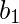–

K-map for 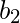–
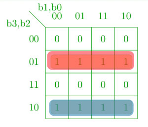
K-map for –
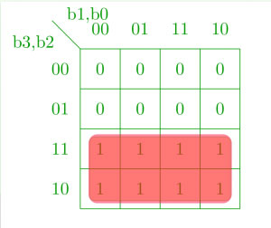
Corresponding minimized boolean expressions for gray code bits –

The corresponding digital circuit –

Converting Gray Code to Binary –
Converting gray code back to binary can be done in a similar manner.
Let be the bits representing the binary numbers, where is the LSB and is the MSB, and
Let be the bits representing the gray code of the binary numbers, where is the LSB and is the MSB.
Truth table-
![\begin{tabular}{||c|c|c|c||c|c|c|c||} \hline \multicolumn{4}{||c||}{Gray Code} & \multicolumn{4}{|c||}{Binary}\\ \hline g_3 & g_2 & g_1 & g_0 & b_3 & b_2 & b_1 & b_0\\ \hline \hline 0 & 0 & 0 & 0 & 0 & 0 & 0 & 0 \\ \hline 0 & 0 & 0 & 1 & 0 & 0 & 0 & 1 \\ \hline 0 & 0 & 1 & 0 & 0 & 0 & 1 & 1 \\ \hline 0 & 0 & 1 & 1 & 0 & 0 & 1 & 0 \\ \hline \hline 0 & 1 & 0 & 0 & 0 & 1 & 1 & 1 \\ \hline 0 & 1 & 0 & 1 & 0 & 1 & 1 & 0 \\ \hline 0 & 1 & 1 & 0 & 0 & 1 & 0 & 0 \\ \hline 0 & 1 & 1 & 1 & 0 & 1 & 0 & 1 \\ \hline \hline 1 & 0 & 0 & 0 & 1 & 1 & 1 & 1 \\ \hline 1 & 0 & 0 & 1 & 1 & 1 & 1 & 0 \\ \hline 1 & 0 & 1 & 0 & 1 & 1 & 0 & 0 \\ \hline 1 & 0 & 1 & 1 & 1 & 1 & 0 & 1 \\ \hline \hline 1 & 1 & 0 & 0 & 1 & 0 & 0 & 0 \\ \hline 1 & 1 & 0 & 1 & 1 & 0 & 0 & 1 \\ \hline 1 & 1 & 1 & 0 & 1 & 0 & 1 & 1 \\ \hline 1 & 1 & 1 & 1 & 1 & 0 & 1 & 0 \\ \hline \hline \end{tabular}](../../../imgs/digital-logic/b10241408c09b07926fad83a711e0d86.jpg "Rendered by QuickLaTeX.com")
Using K-map to get back the binary bits from the gray code –
K-map for –
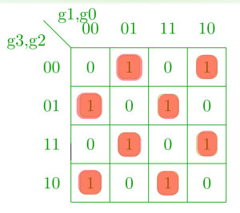
K-map for –
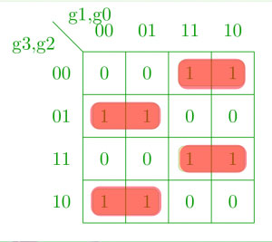
K-map for –
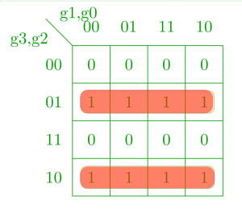
K-map for –
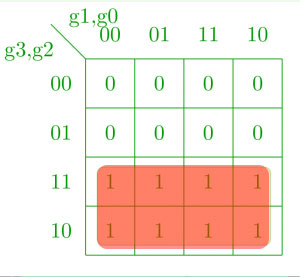
Corresponding Boolean expressions –
![\begin{align*} b_0 &=g_3^\prime g_2^\prime g_1^\prime g_0 + g_3^\prime g_2^\prime g_1g_0^\prime + g_3^\prime g_2g_1^\prime g_0^\prime + g_3^\prime g_2g_1g_0 +g_3g_2^\prime g_1^\prime g_0^\prime + g_3g_2^\prime g_1g_0 \\ &\:\:\:+g_3g_2g_1^\prime g_0 + g_3g_2g_1g_0^\prime \\ &= g_3^\prime g_2^\prime( g_1^\prime g_0 + g_1g_0^\prime) + g_3^\prime g_2(g_1^\prime g_0^\prime + g_1g_0) +g_3g_2^\prime(g_1^\prime g_0^\prime + g_1g_0 )\\ &\:\:\:+g_3g_2 (g_1^\prime g_0 + g_1g_0^\prime) \\ &= g_3^\prime g_2^\prime(g_0\oplus g_1) + g_3^\prime g_2(g_0\odot g_1)+g_3g_2^\prime(g_0\odot g_1) + g_3g_2 (g_0\oplus g_1) \\ &= (g_0\oplus g_1)(g_2\odot g_3) + (g_0\odot g_1)(g_2\oplus g_3)\\ &= g_3\oplus g_2\oplus g_1\oplus g_0\\ b_1 &= g_3^\prime g_2^\prime g_1 + g_3^\prime g_2g_1^\prime + g_3g_2g_1 + g_3g_2^\prime g_1^\prime \\ &= g_3^\prime(g_2^\prime g_1 + g_2g_1^\prime) + g_3(g_2g_1 + g_2^\prime g_1^\prime) \\ &= g_3^\prime(g_2\oplus g_1) + g_3(g_2\odot g_1) \\ &= g_3\oplus g_2\oplus g_1\\ b_2 &= g_3^\prime g_2 + g_3g_2^\prime\\ &= g_3\oplus g_2\\ b_3 &= g_3 \end{align*}](../../../imgs/digital-logic/3e7bbdf812b93c83c69d291d841dcc03.jpg "Rendered by QuickLaTeX.com")
Corresponding digital circuit –

References –
Digital Design, 5th edition by Morris Mano and Michael Ciletti